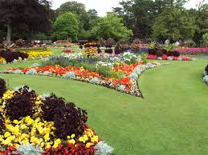
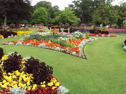

Select theme:
A little about myself
With over 30 years’ experience I have gardening in my blood, gaining my qualifications from Pershore College and completing my degree at Birmingham University. My early training was as a gardener at a local stately home (Spetchley Park) where my interest in water gardens and natural stonework developed, along with a desire to learn how to design and build my own gardens. I left to join a renowned landscape company which provided me with the opportunity to work with several hugely experienced and accomplished designers. Here I honed my skills, not only in design, but also in the hands-on construction of the gardens and water features. Having designed and been the lead contractor on over 10 medal winning show gardens, including 5 RHS medal gardens, the time came to go at it alone and I left to start up my own business. That was over 12 years ago and here we are today, with a small team of skilled experienced people who are all committed to producing outstanding gardens for our clients to enjoy for many years to come. I believe in supporting local businesses so I will always look to local companies for our supplies and where possible use only local materials such as Forest of Dean or Malvern stone, or Hereford oak timber. I’m also keen to work with local artists and can source original pieces of commissioned artwork made specifically for your garden. Finally, I’m passionate about recycling where possible. All green waste that we remove is stored and composted and eventually reused as a soil conditioner in the gardens that we create. We look to use reclaimed materials where design allows and reduce the amount we dispose of in landfill.
 
